ECT/UFRN
O que é possível fazer a partir de duas imagens obtidas com uma câmera calibrada de uma mesma cena?
Computar o movimento relativo de uma plataforma robótica (odometria visual) (Nistér, Naroditsky, e Bergen 2004)
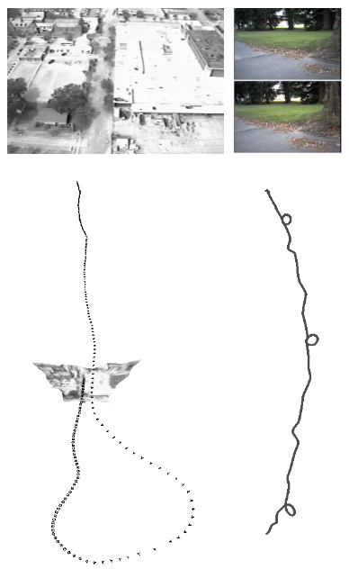
Computar o movimento realizado por uma câmera (odometria visual) (Silva, Burlamaqui, e Gonçalves 2012)
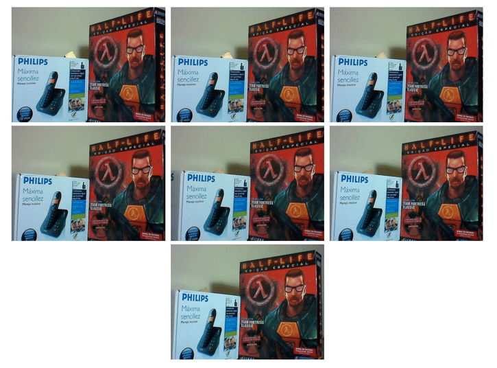
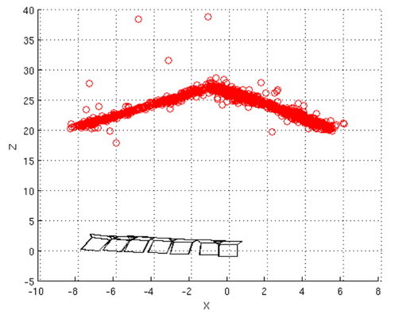
Obter reconstruções 3D em larga escala (Schönberger e Frahm 2016)
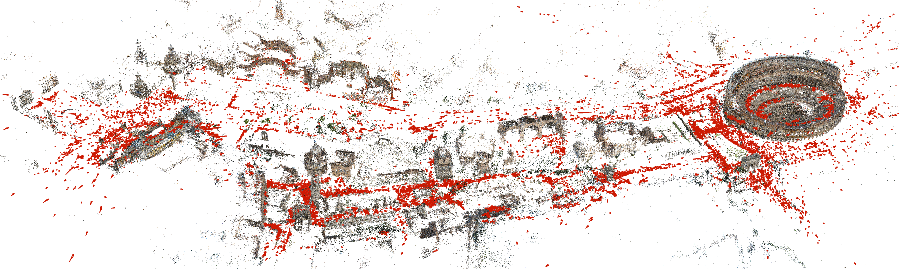
Os trabalhos listados têm como fundamentos a geometria de duas ou mais visualizações de uma cena:
Este tópico de pesquisa é conhecido como Structure from Motion - SfM (estrutura a partir do movimento) e tem algumas versões:
Nesta aula, são mostrados os principais fundamentos matemáticos que constituem aplicações desta classe.
Os modelos matemáticos desta aula assumem que a câmera está calibrada.
Parâmetros:
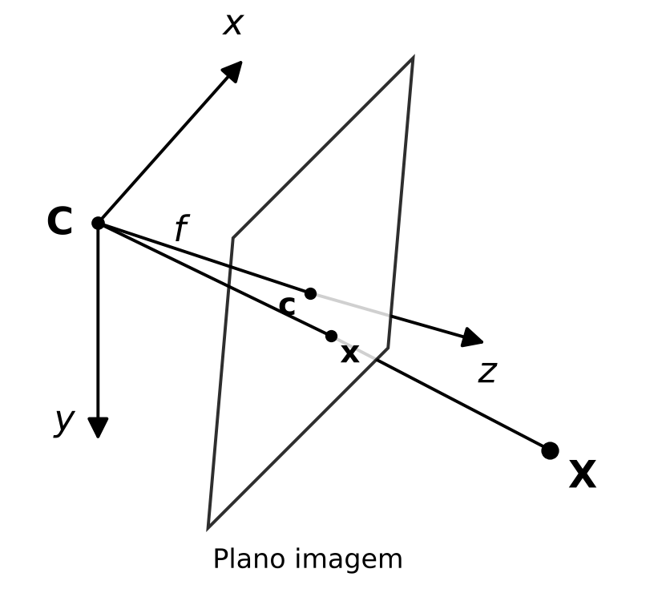
Estes parâmetros estão na matriz de parâmetros intrínsecos K que realiza a projeção perspectiva:
\begin{gathered} \hat{\mathbf{x}} = K\mathbf{X} = \\ \begin{bmatrix} \hat{x} \\ \hat{y} \\ \hat{z} \end{bmatrix} = \begin{bmatrix} f_x & 0 & c_x \\ 0 & f_y & c_y \\ 0 & 0 & 1 \end{bmatrix} \begin{bmatrix} X \\ Y \\ Z \end{bmatrix} \end{gathered}
As coordenadas de imagem do ponto projetado são dadas então por \mathbf{x} = \hat{\mathbf{x}}/\hat{z} = [u, v, 1]^t
Quando os pontos a serem projetados não estão no sistema de coordenadas de câmera, é necessário transformar os pontos do mundo com os parâmetros extrínsecos
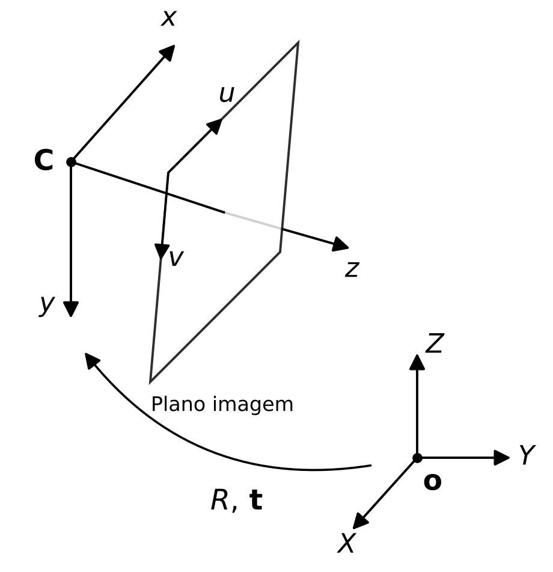
Com R e \mathbf{t}, temos:
\begin{gathered} \hat{\mathbf{x}} = K[R|\mathbf{t}]\hat{\mathbf{X}} = \\ \begin{bmatrix} \hat{x} \\ \hat{y} \\ \hat{z} \end{bmatrix} = \begin{bmatrix} f_x & 0 & c_x \\ 0 & f_y & c_y \\ 0 & 0 & 1 \end{bmatrix} \begin{bmatrix} r_{00} & r_{01} & r_{02} & t_x \\ r_{10} & r_{11} & r_{12} & t_y \\ r_{20} & r_{21} & r_{22} & t_z \end{bmatrix} \begin{bmatrix} X \\ Y \\ Z \\ 1 \end{bmatrix} \end{gathered}
Duas imagens de uma mesma cena, com a câmera alterando a sua posição, formam o que se chama de geometria epipolar. Isto pode ser obtido em duas situações:
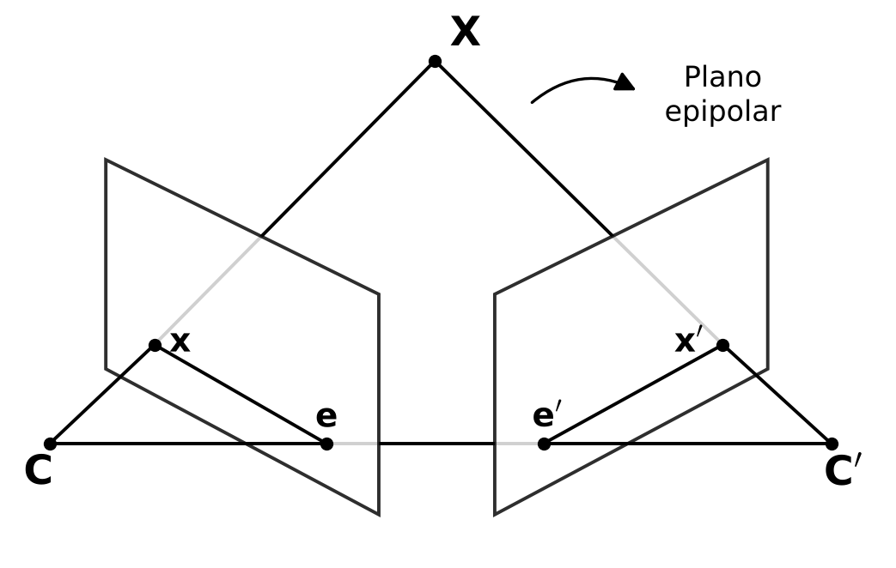
A geometria epipolar é formada por:
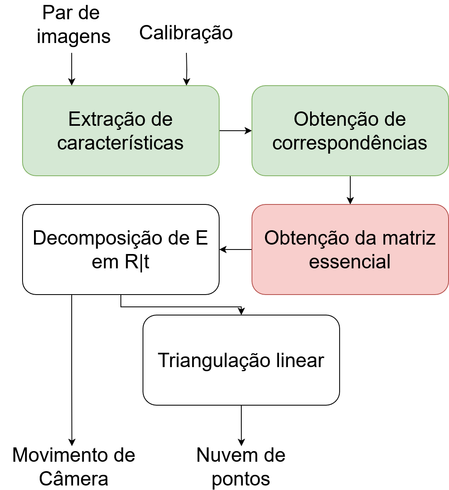
Uma matriz E relaciona um ponto \mathbf{X} da câmera \mathbf{C} com o seu correspondente \mathbf{X}' na câmera \mathbf{C}'.
Para deduzir esta matriz:
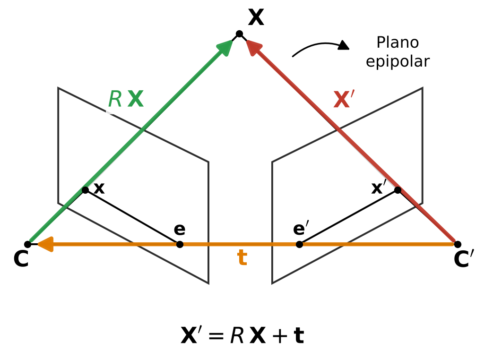
Uma vez que \mathbf{X}', \mathbf{t} e R\mathbf{X} são três vetores que pertencem a um mesmo plano, podemos expressar a relação de coplanaridade entre eles pelo produto misto:
(\mathbf{X}')^t(\mathbf{t} \times R\mathbf{X}) = 0
É possível realizar produto vetorial por meio de uma matriz antissimétrica S, ou seja, \mathbf{t} \times R\mathbf{X} = SR\mathbf{X}, com
S = \begin{bmatrix} 0 & -t_z & t_y \\ t_z & 0 & -t_x \\ -t_y & t_x & 0 \end{bmatrix}
Assim, a relação de coplanaridade se torna
(\mathbf{X}')^t(SR\mathbf{X}) = 0
A Matriz Essencial E é definida pelo produto entre a matriz antissimétrica que contém a translação S e a matriz de rotação R, ou seja:
E = SR
e portanto, temos a relação entre \mathbf{X} e \mathbf{X}',
\mathbf{X}'^t E \mathbf{X} = 0
A matriz essencial E:
Observe que a partir da projeção
Z\mathbf{x} = K\mathbf{X},
é possível fazer a retroprojeção do pixel [u,v]^t, isto é, traçar o raio que sai do centro de projeção, passa por ele e intercepta o plano Z = 1
Isolando \mathbf{X}, temos
\mathbf{X} = ZK^{-1}\mathbf{x},
ou seja, o ponto \mathbf{X} a menos da sua profundidade Z. No plano Z=1, o ponto retroprojetado é K^{-1}\mathbf{x}
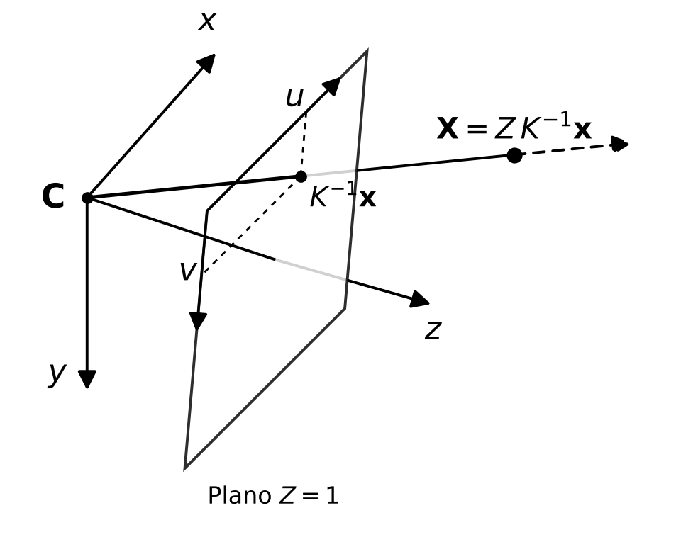
K^{-1}\mathbf{x} é então dado por
K^{-1}\mathbf{x} = \begin{bmatrix} X/Z \\ Y/Z \\ 1 \end{bmatrix} = \begin{bmatrix} \dfrac{u - c_x}{f_x} \\[2mm] \dfrac{v - c_y}{f_y} \\[2mm] 1 \end{bmatrix} = \begin{bmatrix} \frac{1}{f_x} & 0 & \frac{-c_x}{f_x} \\ 0 & \frac{1}{f_y} & \frac{-c_y}{f_y} \\ 0 & 0 & 1 \end{bmatrix} \begin{bmatrix} u \\ v \\ 1 \end{bmatrix}
Podemos substituir o ponto retroprojetado ZK^{-1}\mathbf{x} na expressão da Matriz Essencial, para assim obter relações diretas entre os pontos na imagem \mathbf{x} e \mathbf{x}'
\begin{aligned} \mathbf{X}'^t E \mathbf{X} & = 0\\ (Z'K^{-1}\mathbf{x}')^t E (ZK^{-1}\mathbf{x})& = 0\\ Z'Z(K^{-1}\mathbf{x}')^t E (K^{-1}\mathbf{x})& = 0\\ \mathbf{x}'^{t}K^{-t} E K^{-1}\mathbf{x} & = 0 \end{aligned}
Chamamos o produto K^{-t} E K^{-1} de Matriz Fundamental:
F = K^{-t} E K^{-1}
e a partir dela, obtemos a relação direta entre pontos de imagem de duas visualizações de um mesmo ponto
\mathbf{x}'^t F \mathbf{x} = 0
A matriz fundamental F:
Como F é uma matriz homogênea 3 \times 3, ela pode ser computada utilizando 8 correspondências com o Algoritmo dos 8 Pontos:
A relação entre pontos na imagem e a matriz fundamental pode ser escrita como:
\mathbf{x}'^t F \mathbf{x} = 0
\begin{bmatrix} u' & v' & 1 \end{bmatrix} \begin{bmatrix} f_1 & f_2 & f_3 \\ f_4 & f_5 & f_6 \\ f_7 & f_8 & f_9 \end{bmatrix} \begin{bmatrix} u \\ v \\ 1 \end{bmatrix} = 0
\begin{bmatrix} u'f_1 + v'f_4 + f_7 & u'f_2 + v'f_5 + f_8 & u'f_3 + v'f_6 + f_9 \end{bmatrix} \begin{bmatrix} u \\ v \\ 1 \end{bmatrix} = 0
uu'f_1 + uv'f_4 + uf_7 + v'f_2 + vv'f_5 + vf_8 + u'f_3 + v'f_6 + f_9 = 0
Ou seja:
Assim, o sistema de equações lineares fica
\begin{bmatrix} u_1 u & v_1 u_1' & u_1' & u_1 v_1' & v_1 v_1' & v_1' & u_1 & v_1 & 1 \\ \vdots & \vdots & \vdots & \vdots & \vdots & \vdots & \vdots & \vdots & \vdots \\ u_8 u_8' & v_8 u_8' & u_8' & u_8 v_8' & v_8 v_8' & v_8' & u_8 & v_8 & 1 \end{bmatrix} \begin{bmatrix} f_1 \\ \vdots \\ f_9 \end{bmatrix} = \begin{bmatrix} 0 \\ \vdots \\ 0 \end{bmatrix}
O sistema deve ser resolvido em conjunto com RANSAC (8 correspondências sendo selecionadas aleatoriamente).
Para resolver o sistema - SVD:
A matriz essencial pode ser computada a partir de 5 correspondências:
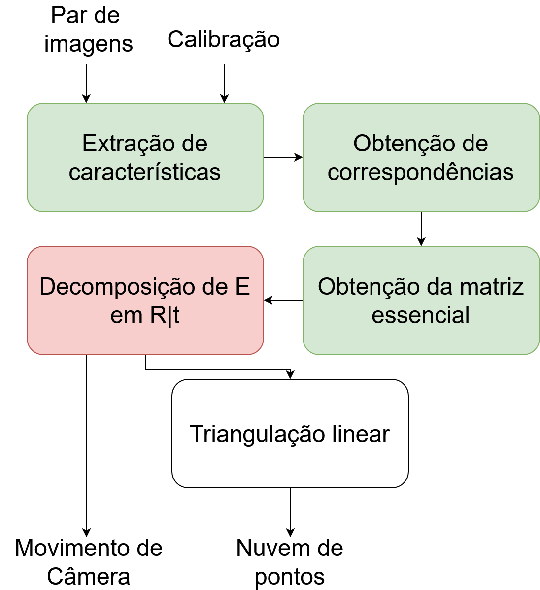
A pose relativa de câmera (rotação e translação) que relaciona o sistema de coordenadas da 1ª câmera com o sistema da 2ª pode ser recuperada a partir da matriz E:
Sendo a SVD de E = U\Sigma V^t, existem 4 possibilidades para R|\mathbf{t}:
Nestas equações,
W = \begin{bmatrix} 0 & -1 & 0 \\ 1 & 0 & 0 \\ 0 & 0 & 1 \end{bmatrix}
e \mathbf{u}_3 é o 3º vetor coluna de U
Apesar de todas as 4 possibilidades anteriores serem válidas matematicamente, em apenas 1 delas os pontos 3D estarão à frente de ambas as câmeras.
No slide seguinte, são mostradas visões superiores com os 4 pares de câmeras e um ponto 3D. Em apenas um dos pares a pose está correta (o ponto 3D está à frente das duas câmeras).
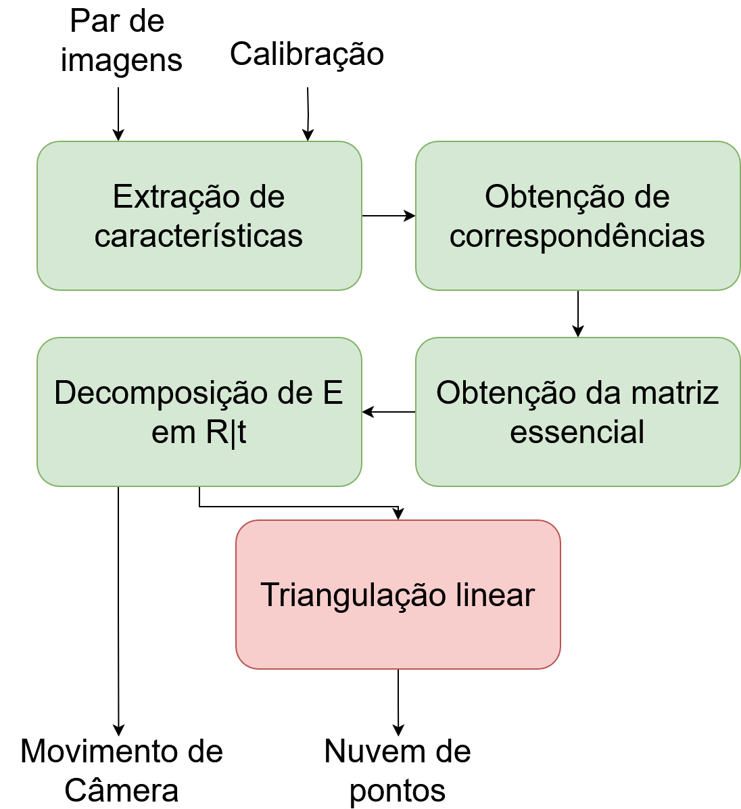
As matrizes de parâmetros intrínsecos e extrínsecos podem ser multiplicadas, resultando em uma única matriz, chamada matriz de projeção P:
P = K[R|\mathbf{t}]
A partir disto e de posse dos parâmetros R e \mathbf{t} que relaciona um par de imagens, é possível obter uma reconstrução 3D das correspondências.
Isto é feito expressando as projeções para o par de câmeras:
P = K[I|\mathbf{0}],
sendo I a matriz identidade e \mathbf{0} um vetor coluna de 0s e
P' = K[R|\mathbf{t}]
Um ponto 3D \mathbf{X} no sistema de coordenadas da primeira câmera é projetado em ambas as câmeras por
\hat{z}\mathbf{x} = P\mathbf{X}
e
\hat{z}'\mathbf{x}' = P'\mathbf{X}
Deixando explícitas as coordenadas de imagem e o fator de escala, assim como os vetores linha \mathbf{p}_i da matriz P, temos que
\hat{z} \begin{bmatrix} u \\ v \\ 1 \end{bmatrix} = \begin{bmatrix} \mathbf{p}_1 \\ \mathbf{p}_2 \\ \mathbf{p}_3 \end{bmatrix} \mathbf{X}
Trazendo o lado direito da equação para o lado esquerdo, ficamos com
\begin{bmatrix} \hat{z}u - \mathbf{p}_1\mathbf{X} \\ \hat{z}v - \mathbf{p}_2\mathbf{X} \\ \hat{z} \end{bmatrix} = \begin{bmatrix} 0 \\ 0 \\ \mathbf{p}_3\mathbf{X} \end{bmatrix}
Dividindo as duas primeiras equações pela escala homogênea,
\begin{matrix} u\mathbf{p}_3\mathbf{X} - \mathbf{p}_1\mathbf{X} \\ v\mathbf{p}_3\mathbf{X} - \mathbf{p}_2\mathbf{X} \end{matrix} = \begin{bmatrix} 0 \\ 0 \end{bmatrix}
Temos 2 equações para 3 incógnitas, sendo estas as componentes de \mathbf{X}
Só que podemos usar a relação para a 2ª Câmera, no que resulta em 4 equações para 3 incógnitas:
\begin{matrix} u\mathbf{p}_3\mathbf{X} - \mathbf{p}_1\mathbf{X} \\ v\mathbf{p}_3\mathbf{X} - \mathbf{p}_2\mathbf{X} \\ u'\mathbf{p}_3'\mathbf{X} - \mathbf{p}_1'\mathbf{X} \\ v'\mathbf{p}_3'\mathbf{X} - \mathbf{p}_2'\mathbf{X} \end{matrix} = \begin{bmatrix} 0 \\ 0 \\ 0 \\ 0 \end{bmatrix}
Assim, ficamos com um sistema linear
\begin{bmatrix} u\mathbf{p}_3 - \mathbf{p}_1 \\ v\mathbf{p}_3 - \mathbf{p}_2 \\ u'\mathbf{p}_3' - \mathbf{p}_1' \\ v'\mathbf{p}_3' - \mathbf{p}_2' \end{bmatrix} \begin{bmatrix} X \\ Y \\ Z \\ 1 \end{bmatrix} = \begin{bmatrix} 0 \\ 0 \\ 0 \\ 0 \end{bmatrix},
do tipo A\mathbf{x} = \mathbf{0}, com a matriz A de tamanho 4 \times 4.
A solução é novamente computada com SVD.
Importante - a escala da reconstrução é arbitrária:
Funções na OpenCV:
findFundamentalMat (Algoritmo dos 8 pontos)findEssentialMat (Algoritmo dos 5 pontos)decomposeEssentialMat (para extrair a rotação e translação da Matriz Essencial)triangulatePoints (2 visualizações)triangulatePoints (N visualizações)Principais causas de falha:
Nesta aula – Estrutura a partir do Movimento:
Visão Robótica - PPGEMECA/UFRN